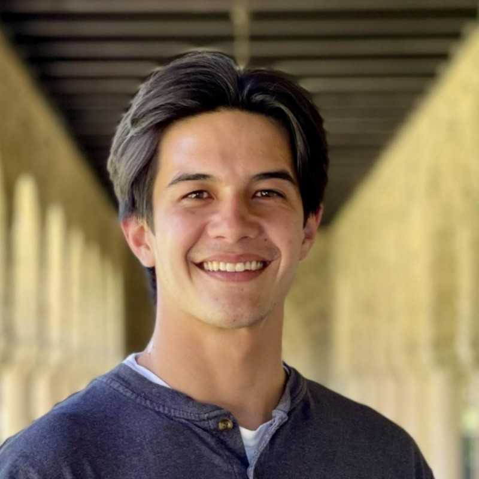

I’m interested in acute, intense experiences, such as awe, self-transcendence, and immersion. Some happen in ordinary life: being swept up at a concert, being struck by beauty on a hike, watching your team with friends, or feeling elevation at an act of moral beauty. Others are cultivated through practices such as meditation, mindful yoga, or psychedelic experiences. What draws me is what comes after. The benefits rarely seem to come from the peak alone, but from how people integrate the experience into their lives, and how that shapes longer-term outcomes like meaning in life and well-being.
To study these questions, I draw on methods I’ve worked with in past research: longitudinal designs that follow people over months, physiological measures such as at-home blood sampling, and support for neuroimaging studies, with groups ranging from young children and their caregivers to adults with a recent cancer diagnosis. I’ve also helped develop brief digital interventions, including a breathwork condition.
Going forward, I want to do this work where these experiences actually happen. That means building lasting relationships with venues, community spaces, and arts organizations, so I can study concertgoers, workshop attendees, and others in their own setting. I’m currently developing a study on how people remember and revisit a concert in the weeks after.
Projects
Things I build outside the lab, mostly around records and listening.
- A listening installation: a portable turntable setup, inspired by the jazz kissa of Japan, set up outdoors at Terman Fountain and inside a gallery at the Center for Creativity.
- Yard AERS: a survey installation at The Yard Coffee, for a grad school project.
- Music for Mental Health: community events in Chico that raised over $5,000 for mental health organizations.
- House Collection, my records synced from Discogs, and Not Quite My Tempo, a tempo and tuning tool.
Videos
Speaking to the Redwood City City Council about the Center for Creativity
Opens the city’s meeting video at my comment.